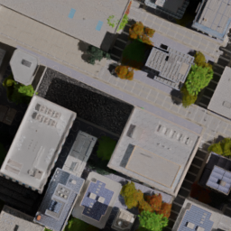
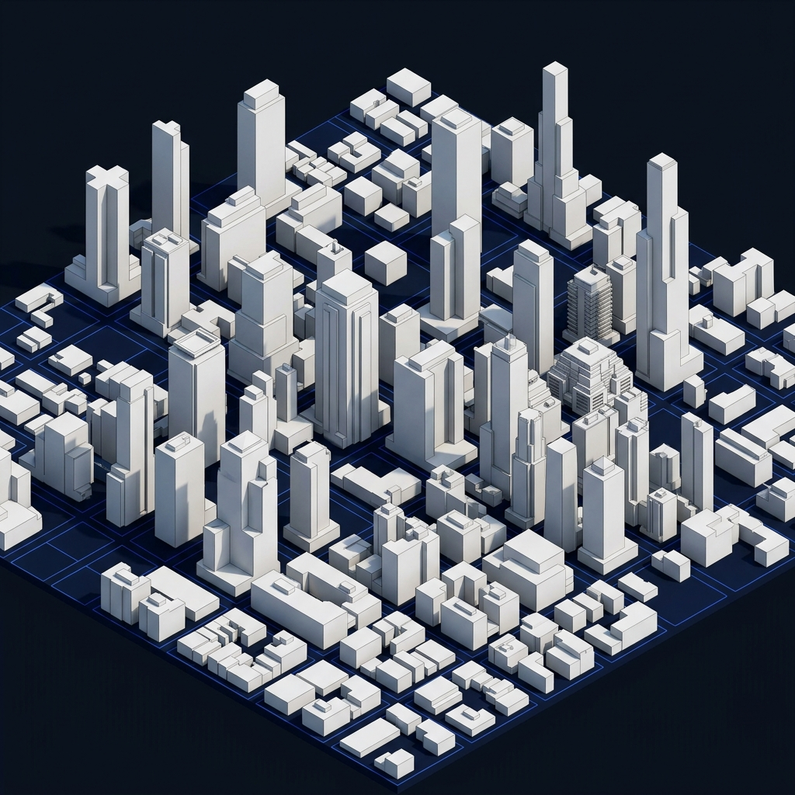

Transform standard monocular RGB satellite imagery into structured LoD1 3D building models and metric nDSM height fields using our multi-task deep neural network.


From a single monocular image to geometric 3D meshes ready for CAD, GIS, and game engines.
Loads top-down satellite or aerial RGB imagery without requiring stereo baseline or LiDAR survey passes.
Jointly estimates high-resolution building footprint masks (sigmoid) and per-pixel continuous building heights in meters.
OpenCV watershed boundary clustering, rotated minimum-area bounding, and Douglas-Peucker simplification produce clean architectural polygons.
Extrudes building footprints to real-world metric heights, computes Y-up coordinates, and exports standard Wavefront .OBJ 3D models.
Full orbit camera controls, diffuse lighting, wireframe edge shaders, and ground reference grid powered by Three.js.
Instantly download clean 3D Wavefront .OBJ meshes and 16-bit normalized heightmaps for GIS, Blender, and game engines.
Trained with normalized Digital Surface Models (nDSM) ground truth to ensure metric vertical scale in real meters.
Test with our curated satellite samples or drag and drop your own aerial imagery.